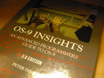

OS-9 Books
Here you will find some books about the OS-9 operating system.
The CD-RTOS operating system of CD-i is based on OS-9 2.4.
The OS-9 Insights books below are enhanced PDF versions of the OS-9 Insights books written by Peter C. Dibble.
They have been freely available online for quite some time.
These books were written for programmers who would like to use the advanced features
of OS-9. It explains and illustrates features of OS-9 ranging from memory management
through file managers. The illustrations are examples, either programs or scripts of
interactions with OS-9. They are intended to expose the details of the techniques
under discussion and suggest interesting applications.
-
OS-9 Insights - An Advanced Programmers Guide to OS-9,
Second Edition
This second edition of OS-9 Insights is a major update. The changes to OS-9
Insights were partly driven by changes to OS-9; colored memory, signal queuing and
masking, disk caching, and variable sector size support have been added to OS-9 since
the first edition of OS-9 Insights.
This edition of Insights also has a great deal more to say about such
topics as signals and scheduling and has added a device driver in C
that will hopefully make device driver construction almost as casual
as ordinary programming.
This book reflects Version 2.4 of OS-9/68000.
Download os9insights_ed2.pdf (PDF, 549 pages)
|
|
-
OS-9 Insights - An Advanced Programmers Guide to OS-9,
Third Edition
This is the third edition of OS-9 Insights. Coincidentally it is also the edition that
reflects edition 3.0 of the OS-9 kernel. It is not a massive update on the scale of
the second edition, but there is some polishing, several new chapters, and changes
throughout. A few statements in the second edition became dangerous lies for OS-9
3.0 and have been removed.
This book reflects Version 3.0 of OS-9/68000.
Download os9insights_ed3.pdf (PDF, 654 pages)
|
 |
These books are Copyright © 1992, 1994 by Microware.
New material in these PDF versions is Copyright © 1997, 1999 by Microware.
All rights reserved. These books are only provided for educational purposes.
The book The OS-9 Guru below is the authoritative reference for the inner workings of OS-9 2.4.
It has been out of print for many years and is provided here to preserve this unique resource for OS-9 developers.
This book is aimed at a wide audience, from novice computer users,
through experienced applications programmers, up to systems programmers
seeking to adapt or extend OS-9.
-
The OS-9 Guru - Inside information about how OS-9 works
This book gives the inside information about how the operating system works, in complete and authoritative detail. And it
describes how the features of the operating system should be used in
applications programs.
This is not a "chatty" book. It is intended as
a readable reference work, to give the reader the facts about OS-99. Nor does
it repeat information that is readily available from the Microware OS-9
User's and Technical Manuals.
This book was written for OS-9 version 2.4 (equivalent to CD-RTOS), but
also describes changes and improvements to the operating system from
version 2.2 onwards.
|
|

This book is Copyright © 1992 by Paul S. Dayan.
Published by Galactic Industrial Limited.
All rights reserved. This book is only provided for educational purposes.
|

{kind=link}
{kind=link}
{kind=link}